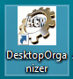
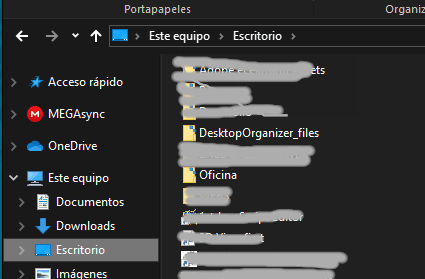

Este programa DesktopOrganizer.exe no requiere instalación.
Consecuentemente no instala ningún componente ni librería en su PC. Utiliza componentes presentes por defecto en cualquier instalación de Windows, y ha sido probado en XP, 7 y 10.
Puede descargar este programa en cualquier directorio de su preferencia.
Solo realiza tres operaciones al ser ejecutado:
- Crea un acceso directo al propio programa en su Escritorio , como el que se muestra en la figura.

De esta forma podrá ejecutarlo sin tener que recordar donde lo dejó.
- Crea un subdirectorio llamado "DesktopOrganizer_files" debajo del directorio "Escritorio" de su PC. Ver siguiente figura:

Este es el directorio en el que se almacenan, por defecto, los ficheros de configuración (*.dto) de este programa. Al estar debajo del directorio "Escritorio", aparece como un "acceso directo" en el Escritorio, con un icono y texto mostrado en la siguiente figura.
Haciendo click en este icono del Escritorio, aparecerán los ficheros de configuración que haya creado con el Organizador de Escritorio (DesktopOrganizer.exe).
- Crea una asociación entre los fichero con extensión ".dto" y este ejecutable. Como consecuencia, si hace doble click con el ratón en alguno de los ficheros .dto que verá pulsando el icono "DesktopOrganizer_files", se ejecutará el programa, abriendo ese fichero.